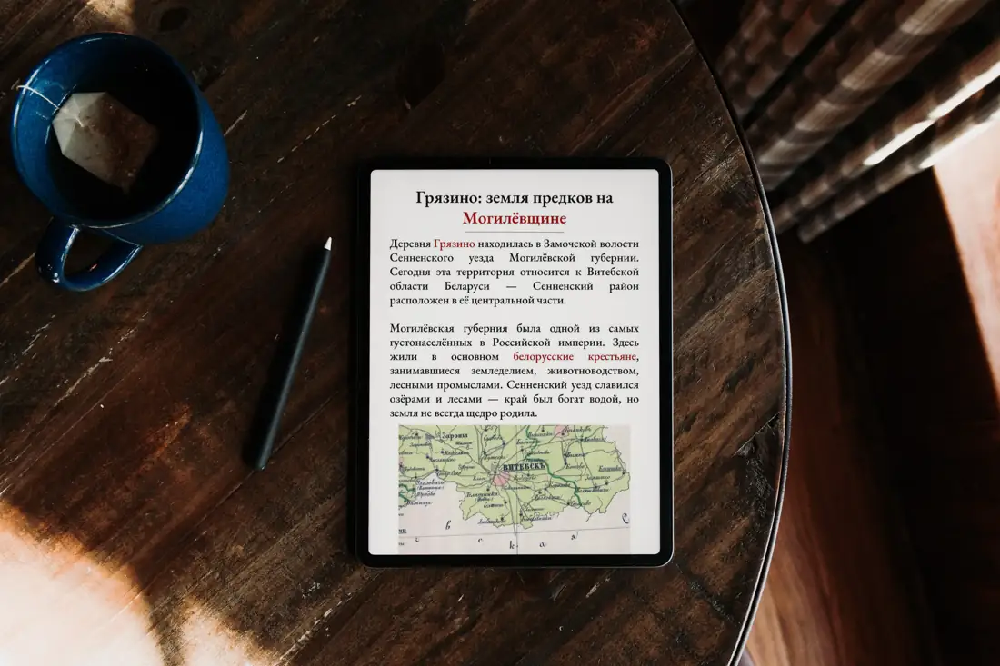
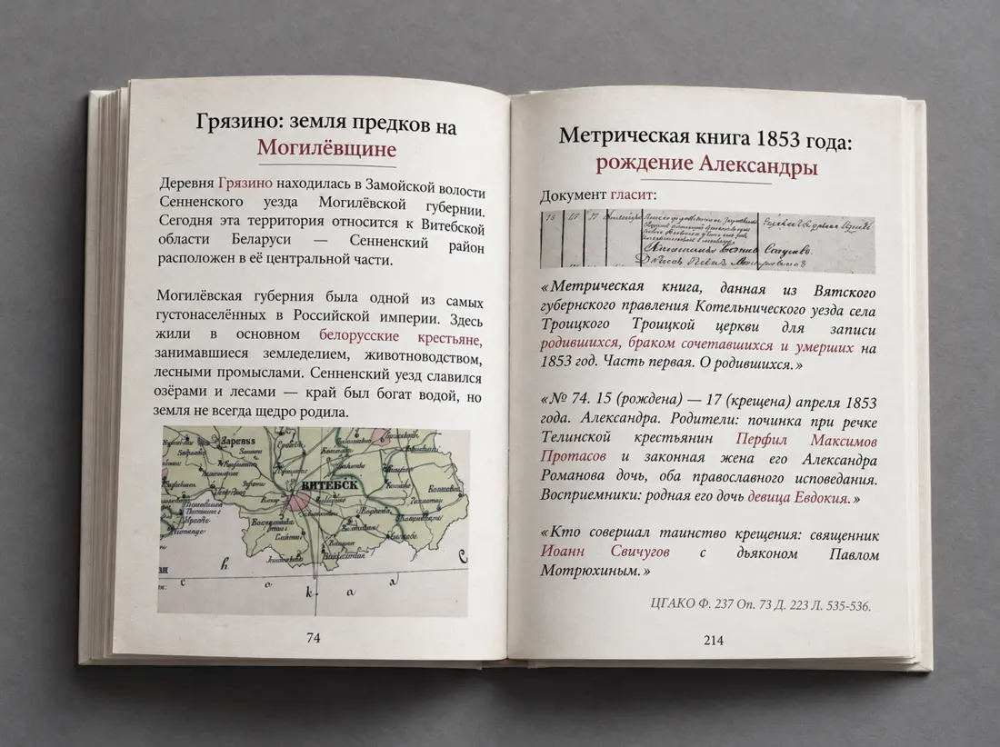
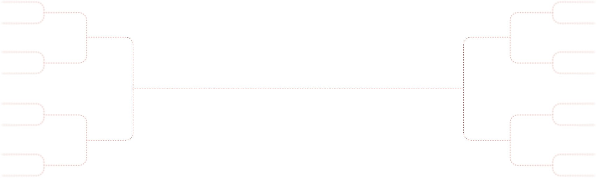

1–2 дня
Интервью
Беседуем с членами семьи в удобном формате, собираем сведения и материалы. Вместе решаем, что войдёт в книгу.
1 этап
Глубокое генеалогическое исследование: находим документы о ваших предках в архивах, изучаем и расшифровываем их, а затем оформляем всё найденное в родословную книгу и родословное древо — на долгую память.
В основе книги — исследование. Мы ищем записи о ваших предках в архивах, расшифровываем метрические книги и другие документы, сопоставляем сведения и восстанавливаем историю рода на фоне эпохи. Семейная память обычно хранит два-три поколения — документы позволяют заглянуть намного глубже.
Всё найденное оформляем в родословную книгу: копии документов с расшифровкой, исторические справки и рассказ о каждом поколении. Отдельно создаём дизайн родословного древа. А то, что уже известно по семейным рассказам, письмам и фотографиям, бережно собираем и встраиваем в общую историю.
Вы получите не просто красивое издание, а историю рода, подкреплённую документами, — семейную реликвию, которая со временем становится только ценнее. Базовый результат — электронная книга, которой можно поделиться со всеми родственниками или распечатать для себя в типографии по нашим рекомендациям. Если удобнее, чтобы распечатали мы, — обговорим детали.


Работа была выполнена очень быстро, но в процессе поисков я узнала, что информация мне уже неактуальна и написала об этом Глебу. Даже несмотря на это! Глеб все равно выслал мне документ, который удалось найти, за что я ему безумно благодарна. Всегда был на связи и по максимуму отвечал на все вопросы. Обязательно посоветую друзьям и знакомым. Глеб, спасибо еще раз!
 Ксения
Ксения
 Наталья
Наталья
Спасибо большое Глебу! Быстро и качественно оформил древо
Буду рекомендовать знакомым по надобности
 Алина
Алина
 Юлия
Юлия
Итоговая стоимость зависит от нескольких факторов. Ответьте на вопросы ниже, чтобы узнать ориентировочную сумму, или свяжитесь с нами — уточним цену на консультации.

Примерная цена услуги
0 ₽
Мы не можем заранее знать все обстоятельства: сохранность архивов, доступность нужных записей и другие факторы, которые повлияют на объём работы. Точную стоимость назовём после того, как вы свяжетесь с нами и мы оценим вашу ситуацию.